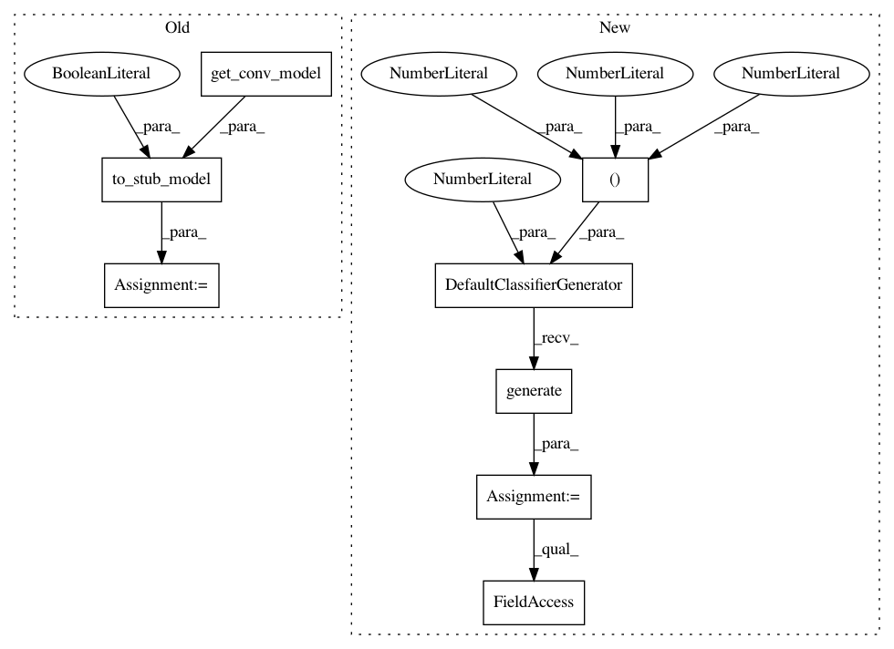

f4503bb3a3be014b452f54d8e2d187bb6419f627,tests/test_layer_transformer.py,,test_wider_conv,#,52
Before Change
def test_wider_conv():
model = to_stub_model(get_conv_model(), True)
assert isinstance(wider_pre_conv(model.layers[2], 3), StubConv)
assert isinstance(wider_bn(model.layers[3], 3, 3, 3), StubBatchNormalization)
assert isinstance(wider_next_conv(model.layers[6], 3, 3, 3), StubConv)
After Change
def test_wider_conv():
model = DefaultClassifierGenerator(10, (28, 28, 3)).generate().produce_model()
model.set_weight_to_graph()
graph = model.graph
assert isinstance(wider_pre_conv(graph.layer_list[1], 3), StubConv)
assert isinstance(wider_bn(graph.layer_list[2], 3, 3, 3), StubBatchNormalization)
assert isinstance(wider_next_conv(graph.layer_list[6], 3, 3, 3), StubConv)
In pattern: SUPERPATTERN
Frequency: 4
Non-data size: 8
Instances
Project Name: keras-team/autokeras
Commit Name: f4503bb3a3be014b452f54d8e2d187bb6419f627
Time: 2018-08-01
Author: jhfjhfj1@gmail.com
File Name: tests/test_layer_transformer.py
Class Name:
Method Name: test_wider_conv
Project Name: keras-team/autokeras
Commit Name: f4503bb3a3be014b452f54d8e2d187bb6419f627
Time: 2018-08-01
Author: jhfjhfj1@gmail.com
File Name: tests/test_layer_transformer.py
Class Name:
Method Name: test_deeper_conv_block